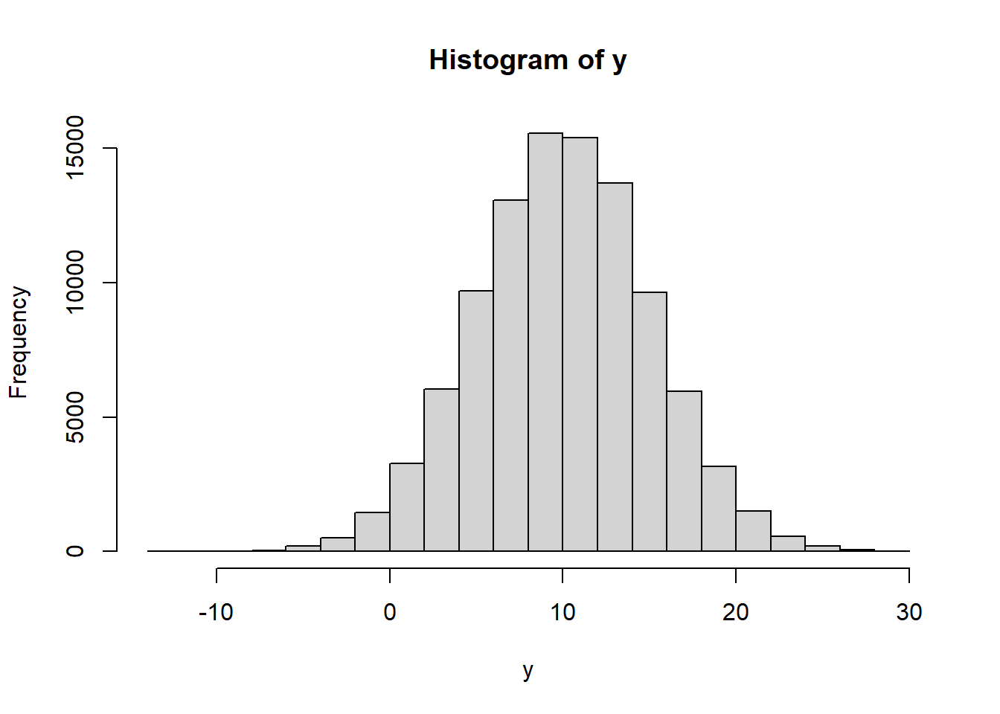

1 Análisis de datos estadísticos básico en R
1.1 Introducción a R e investigación reproducible
1.1.1 ¿Qué es R?
R es un software de libre distribución

Comparación perfecta

Ciencia de datos
1.1.1.1 Algo de historia de R
- R es el hermano de S
- S es un lenguaje de programación estadística desarrollado por John Chambers de Bell Labs
- El objetivo de S era “convertir las ideas en el software, de forma rápida y fielmente”
- S fue creado en 1976 y se reinvento 1988 introduciendo muchos cambios
- En 1993, StatSci (fabricante de S-Plus) adquieren licencia exclusiva a S
- S-Plus integra S con una interfaz gráfica de usuario agradable y pleno apoyo al cliente
- R Fue creado por Ross Ihaka y Robert Gentleman de la University of Auckland, New Zealand
1.1.1.2 Acerca de R
- El proyecto R inicio en 1991
- R apareció por primera vez en 1996 como un software de código abierto!
- Altamente personalizable a través de paquetes
- La comunidad R, se basa en el poder de la colaboración con miles de paquetes de libre disposición
- Existen muchas interfaces gráficas de usuario de R libres y comerciales (por ejemplo R Studio y Revolución)
1.1.1.3 ¿Qué es R?
R es un conjunto integrado de servicios de software para la manipulación de datos, cálculo y representación gráfica. Incluye:
- instalación sencilla y un fácil almacenamiento de datos
- un conjunto de operadores para los cálculos en arrays, particularmente en las matrices
- facilidad en los gráficos y el análisis de datos y
- bien desarrollado, lenguaje de programación sencillo y eficaz que incluye condicionales, bucles, funciones recursivas definidos por el usuario.
- Altamente intuitivo
A pesar de ser libre y de código abierto, R es ampliamente utilizado por los analistas de datos dentro de las empresas y el mundo académico. (R en the NY Times)
Ver NY Times artículo.
1.1.1.4 Algunas referencias
- aRrgh: a newcomer’s (angry) guide to R by Tim Smith and Kevin Ushey
- Introductory Statistics with by Peter Dalgaard
- R tarjeta de comandos http://cran.r-project.org/doc/contrib/Short-refcard.pdf
- Tutorial de R http://www.cyclismo.org/tutorial/R/
- R project and Bioconductor
Más avanzado, o basado en su interés:
- Hadley Wickham’s book
1.1.2 RStudio
RStudio es un ambiente libre y abierto de desarrollo de código integrado.
- multiplataforma
- El resaltado de sintaxis, completado de código, y la sangría inteligente
- gestionar fácilmente múltiples directorios de trabajo
- Flexible para el manejo de gráficos
- Integrado con Knitr
- Integrado con Git
1.1.3 Instalación y usos
- R-CRAN https://cran.r-project.org/ (elija el Sistema operativo, descargue y siguiente, siguiente…)
- R-Studio https://www.rstudio.com/ (elija el Sistema operativo, descargue y siguiente, siguiente…)
- https://rstudio.cloud/ Para trabajar en línea
Nota: Para actualizar ambos paquetes: descargue la nueva versión e instale (las librerías no sufren cambios).
1.1.4 R básico
R es una calculadora demasiado grande
123+456## [1] 5794657*89## [1] 41447312/34## [1] 0.35294122443-3434## [1] -9911.1.4.1 Lógica de los comandos en R
Como entiende R los comandos
comando(argumentos, argumentos, …)
Advertencia:
- No es posible resumir un comando
- R distingue mayúscula de minúscula
- Siempre cerrar los paréntesis
- R entiende el orden de los argumentos o su nombre clave
Comando para pedir ayuda
?mean # comando para pedir ayuda
?lmEscribir varios comandos en una sola línea.
123*56 ; 435+3544 ; 454+56## [1] 6888## [1] 3979## [1] 510#este es un comentario
1+4;78+89## [1] 5## [1] 1671.1.4.2 Palabras reservadas y simbolos especiales de R
- NA: datos perdidos
- NULL: datos nulos
- Inf -Inf: Infinito
- #: comentario en el código
- TRUE (T), FALSE (F): valores lógicos
- NaN: not a number
- ?: Ayuda
- x, ,x + y, x - y ,x * y ,x / y ,x ^ y (**),x %% y (mod) ,x %/% y (div int)
- ! x, .x & y ,x && y ,x | y ,x || y
, <, >=, <=
1.1.4.3 Símbolos Lógicos
!(5>6) # negación## [1] TRUE2^2 == 4 # igualdad## [1] TRUE2^2 != 4 # desigualdad## [1] FALSE(5>6) & (2^2==4) # y lógico## [1] FALSE(5>6) | (2^2==4) # ó lógico## [1] TRUE(5>6) && (2^2==4) # y lógico## [1] FALSE(5>6) || (2^2==4) # ó lógico## [1] TRUE5 >= 5## [1] TRUE5 <= 5## [1] TRUE1.1.4.4 Asignación o creación de objetos (estructuras, variables)
x<-5
y=10
15->z
x1<<-20
x2<-"Hola"
x3<-'hola'
z*y^x## [1] 1500000x1+z## [1] 35x4<-(4>5)
x5<-(y>x^2)Trate de usar nombres significativos! Miren esto:
1.1.4.5 Clases en R
- Numeric
- character
- logical
- NULL
- factor
y1<-50
y2<-"hola"
y3<-(56>60)
y4<-NA
y5<-NULL
class(y1)## [1] "numeric"class(y2)## [1] "character"class(y3)## [1] "logical"class(y4)## [1] "logical"class(y5)## [1] "NULL"typeof(y1)## [1] "double"typeof(y2)## [1] "character"typeof(y3)## [1] "logical"typeof(y4)## [1] "logical"typeof(y5)## [1] "NULL"z<-"12314234"
class(z)## [1] "character"z2<-as.numeric(z)
class(z2)## [1] "numeric"# as.character1.1.4.6 Algunas comandos adicionales
rm(y) # eliminar objetos
rm(y1,y2,y3,y4)
# listando los objetos en memoria
ls()## [1] "x" "x1" "x2" "x3" "x4" "x5" "y5"
## [8] "z" "z2"# remover todos los objetos en memoria
rm(list=ls())1.1.5 Investigación reproducible con R Markdown
“R Markdown” se introdujo por primera vez en el paquete knitr a principios de 2012. La idea era incrustar fragmentos de código (de R u otros) en los documentos de Markdown. De hecho, knitr soportó varios lenguajes de autoría desde el principio además de Markdown, incluidos LaTeX, HTML, AsciiDoc, reStructuredText y Textile.
Markdown se ha convertido en el formato de documento más popular. La simplicidad de Markdown se destaca claramente entre estos formatos de documentos.
1.1.5.1 Instalación
install.packages('rmarkdown')
# Si se prefiere la versión en desarrollo
if (!requireNamespace("devtools"))
install.packages('devtools')
devtools::install_github('rstudio/rmarkdown')Si el objetivo es usar Markdown para generar documentos PDF se necesita instalar Latex.
Existen cheatsheets utiles para usar markdown, como: cheatsheets
1.1.5.2 YAML Header
Al inicio del archivo y entre las lineas —
---
title: Mi documento
author: Juan Perez
date: Marzo 22, 20220
output: html_document
---1.1.5.3 Sintaxis básica
Énfasis sobre el texto,
*italic* **bold**
_italic_ __bold__Secciones,
# Header 1
## Header 2
### Header 3Items (viñetas) no ordenadas y ordenadas,
* Item 1
* Item 2
+ Item 2a
+ Item 2b
1. Item 1
2. Item 2
3. Item 3
+ Item 3a
+ Item 3bPalabras clave con referencias web,
[linked phrase](http://example.com)Imágenes simples o con titulo,

Blockquotes
It’s always better to give than to receive.
A friend once said:
> It's always better to give than to receive.Ecuaciones en linea y en párrafo,
En linea \(\sum_i{x^2}\) o en párrafo:
\[\sum_i{x^2}\]
$equation$
$$ equation $$1.1.5.4 Tipos de documentos
- beamer_presentation
- github_document
- html_document
- ioslides_presentation
- latex_document
- md_document
- odt_document
- pdf_document
- powerpoint_presentation
- rtf_document
- slidy_presentation
- word_document
1.1.5.5 Chunks
Los chunks son entornos que permiten incluir código en R dentro de las distintos tipos de documentos que genera Rmarkdown, los chunks inician con ```{r} y termina con ```, también es posible introducir chunks en linea con el texto, esto se logra introduciendo
Texto ... `r <code>` ... textoLa parte {r} del chunk sirve para introducir las distintas opciones que va a contener ese chunk, las opciones disponibles son:
- echo (default = TRUE), muestra el código del chunk en la salida del documento
- eval (default = TRUE), corre el código del chunk
- message (default = TRUE), muestra los mensajes que genera el chunk
Existen funciones útiles para mejorar las salidas de tablas, tales como xtable y kable de la librería knitr.
1.2 Estructuras homogéneas
- Scalar: un único valor
x<-1
y<-"hola"
i<-TRUE
j<-FALSE
w<-F- Vectores: Colección de valores simples. Los vectores en R son vectores columna
# definición
x1<-c(2,4,6)
x2<-c(1,2,3,4,7,9,4,2)
x3<-c("hola","chau","adios","hola")
x4<-c(T,T,T,F,F,F,F,T,F,T,F,F,F)
x5<-c(1,2,3,T,T,"Hola")
x6<-c(1,2,3,T,T,F,F)
# operaciones con vectores
x1+x1## [1] 4 8 12x1+x2 # mal ejemplo## Warning in x1 + x2: longer object length
## is not a multiple of shorter object length## [1] 3 6 9 6 11 15 6 6x1**2## [1] 4 16 36x1/x1## [1] 1 1 1x2>5## [1] FALSE FALSE FALSE FALSE TRUE TRUE
## [7] FALSE FALSElog(x2) # logaritmo## [1] 0.0000000 0.6931472 1.0986123
## [4] 1.3862944 1.9459101 2.1972246
## [7] 1.3862944 0.6931472exp(x2) # exponencial## [1] 2.718282 7.389056 20.085537
## [4] 54.598150 1096.633158 8103.083928
## [7] 54.598150 7.389056sqrt(x2) # raíz cuadrada## [1] 1.000000 1.414214 1.732051 2.000000
## [5] 2.645751 3.000000 2.000000 1.4142142^x2## [1] 2 4 8 16 128 512 16 42/x1## [1] 1.0000000 0.5000000 0.3333333# generando vectores
v1<-1:10
v2<-1:10000
sum(v2) #sumar## [1] 50005000v3<-100:1
v4<-99:0
v5<-seq(1,100,2)
v6<-seq(0,1,0.01)
seq(by=10,to=100,from=-20)# anotando el nombre de los argumentos## [1] -20 -10 0 10 20 30 40 50 60
## [10] 70 80 90 100seq(-20,100,10) # respetando el orden de los argumentos## [1] -20 -10 0 10 20 30 40 50 60
## [10] 70 80 90 100v7<-rep(1,100) # repetir algo
v8<-rep(c(1,2,3),10)
v9<-rep(c("hola","cómo","estas","?"),10)
length(v8) # conocer el tamaño del vector## [1] 30length(v6) # conocer el tamaño del vector## [1] 101# vectores estadísticos, generación de variables aleatorias
set.seed(1234)
x<-runif(100,10,20)
mean(x)## [1] 14.37497x## [1] 11.13703 16.22299 16.09275 16.23379
## [5] 18.60915 16.40311 10.09496 12.32551
## [9] 16.66084 15.14251 16.93591 15.44975
## [13] 12.82734 19.23433 12.92316 18.37296
## [17] 12.86223 12.66821 11.86723 12.32226
## [21] 13.16612 13.02693 11.59046 10.39996
## [25] 12.18800 18.10599 15.25698 19.14658
## [29] 18.31345 10.45770 14.56091 12.65187
## [33] 13.04672 15.07307 11.81096 17.59671
## [37] 12.01248 12.58810 19.92150 18.07352
## [41] 15.53334 16.46406 13.11824 16.21819
## [45] 13.29770 15.01997 16.77095 14.84991
## [49] 12.43929 17.65460 10.73780 13.09687
## [53] 17.17272 15.04546 11.52999 15.03933
## [57] 14.93961 17.51200 11.74650 18.48392
## [61] 18.64834 10.41857 13.17182 10.13750
## [65] 12.39026 17.06495 13.08095 15.08548
## [69] 10.51647 15.64570 11.21480 18.92836
## [73] 10.14627 17.83121 10.89961 15.19190
## [77] 13.84267 10.70052 13.20644 16.68495
## [81] 19.26400 14.71910 11.42615 15.44270
## [85] 11.96175 18.98580 13.89500 13.10871
## [89] 11.60029 18.96186 11.66394 19.00425
## [93] 11.34078 11.31614 11.05288 15.11584
## [97] 13.00199 10.26717 13.09647 17.42120z<-round(x,10)
y<-rnorm(100000,10,5)
hist(y)
- Matrices
A<-matrix(c(1,2,3,4),2,2)
matrix(c(1,2,3,4),2,2,byrow=T)## [,1] [,2]
## [1,] 1 2
## [2,] 3 4B<-A>=2
B## [,1] [,2]
## [1,] FALSE TRUE
## [2,] TRUE TRUEmatrix(c("Hola","como", "estan","chau"),2,2)## [,1] [,2]
## [1,] "Hola" "estan"
## [2,] "como" "chau"matrix(c("Hola",1,2,3),2,2)## [,1] [,2]
## [1,] "Hola" "2"
## [2,] "1" "3"matrix(1:10,2,5)## [,1] [,2] [,3] [,4] [,5]
## [1,] 1 3 5 7 9
## [2,] 2 4 6 8 10matrix(1:10,5,2)## [,1] [,2]
## [1,] 1 6
## [2,] 2 7
## [3,] 3 8
## [4,] 4 9
## [5,] 5 10matrix(1:10,5,5)## [,1] [,2] [,3] [,4] [,5]
## [1,] 1 6 1 6 1
## [2,] 2 7 2 7 2
## [3,] 3 8 3 8 3
## [4,] 4 9 4 9 4
## [5,] 5 10 5 10 5# funciones para crear otras matrices
diag(1,5,5)## [,1] [,2] [,3] [,4] [,5]
## [1,] 1 0 0 0 0
## [2,] 0 1 0 0 0
## [3,] 0 0 1 0 0
## [4,] 0 0 0 1 0
## [5,] 0 0 0 0 1diag(1:5,5,5)## [,1] [,2] [,3] [,4] [,5]
## [1,] 1 0 0 0 0
## [2,] 0 2 0 0 0
## [3,] 0 0 3 0 0
## [4,] 0 0 0 4 0
## [5,] 0 0 0 0 5# Matriz inversa
C<-matrix(c(2,5,3,7),2,2)
solve(C)## [,1] [,2]
## [1,] -7 3
## [2,] 5 -2det(C)## [1] -1# operaciones con matrices
A+C## [,1] [,2]
## [1,] 3 6
## [2,] 7 11A-C## [,1] [,2]
## [1,] -1 0
## [2,] -3 -3A*C # elemento a elemento## [,1] [,2]
## [1,] 2 9
## [2,] 10 28A %*% C # Multiplicación matricial## [,1] [,2]
## [1,] 17 24
## [2,] 24 34t(C)# transpuesta## [,1] [,2]
## [1,] 2 5
## [2,] 3 7D<-C %*% t(C) # Simétrica
C %*% solve(C) # Inversa## [,1] [,2]
## [1,] 1 -8.881784e-16
## [2,] 0 1.000000e+00# Desc. Matriz
eigen(D)## eigen() decomposition
## $values
## [1] 86.98850423 0.01149577
##
## $vectors
## [,1] [,2]
## [1,] 0.3864358 -0.9223163
## [2,] 0.9223163 0.3864358svd(D)## $d
## [1] 86.98850423 0.01149577
##
## $u
## [,1] [,2]
## [1,] -0.3864358 -0.9223163
## [2,] -0.9223163 0.3864358
##
## $v
## [,1] [,2]
## [1,] -0.3864358 -0.9223163
## [2,] -0.9223163 0.3864358qr(D)## $qr
## [,1] [,2]
## [1,] -33.6154726 -80.23091122
## [2,] 0.9221944 0.02974821
##
## $rank
## [1] 2
##
## $qraux
## [1] 1.38672668 0.02974821
##
## $pivot
## [1] 1 2
##
## attr(,"class")
## [1] "qr"dim(D)## [1] 2 2- Arrays (Generalización)
array(1:27,c(3,3,3))## , , 1
##
## [,1] [,2] [,3]
## [1,] 1 4 7
## [2,] 2 5 8
## [3,] 3 6 9
##
## , , 2
##
## [,1] [,2] [,3]
## [1,] 10 13 16
## [2,] 11 14 17
## [3,] 12 15 18
##
## , , 3
##
## [,1] [,2] [,3]
## [1,] 19 22 25
## [2,] 20 23 26
## [3,] 21 24 27array(1:81,c(3,3,3,3))## , , 1, 1
##
## [,1] [,2] [,3]
## [1,] 1 4 7
## [2,] 2 5 8
## [3,] 3 6 9
##
## , , 2, 1
##
## [,1] [,2] [,3]
## [1,] 10 13 16
## [2,] 11 14 17
## [3,] 12 15 18
##
## , , 3, 1
##
## [,1] [,2] [,3]
## [1,] 19 22 25
## [2,] 20 23 26
## [3,] 21 24 27
##
## , , 1, 2
##
## [,1] [,2] [,3]
## [1,] 28 31 34
## [2,] 29 32 35
## [3,] 30 33 36
##
## , , 2, 2
##
## [,1] [,2] [,3]
## [1,] 37 40 43
## [2,] 38 41 44
## [3,] 39 42 45
##
## , , 3, 2
##
## [,1] [,2] [,3]
## [1,] 46 49 52
## [2,] 47 50 53
## [3,] 48 51 54
##
## , , 1, 3
##
## [,1] [,2] [,3]
## [1,] 55 58 61
## [2,] 56 59 62
## [3,] 57 60 63
##
## , , 2, 3
##
## [,1] [,2] [,3]
## [1,] 64 67 70
## [2,] 65 68 71
## [3,] 66 69 72
##
## , , 3, 3
##
## [,1] [,2] [,3]
## [1,] 73 76 79
## [2,] 74 77 80
## [3,] 75 78 811.3 Estructuras heterogéneas
- Data frames
- Listas
Estas estructuras permiten el uso de diferentes tipos de clases u objetos.
- Dataframes (Bases de datos)
Tiene una estructura similar a una matriz, donde se define que las filas corresponden a observaciones/sujetos y las columnas son variables.
#encuesta en la sala de clases
id<-1:8
name<-c("adriana","anahi","miguel","rayner","rebeca","sergio","vania","yoselin")
mujer<-c(1,1,0,0,1,0,1,1)
bd<-data.frame(id,name,mujer)
bd## id name mujer
## 1 1 adriana 1
## 2 2 anahi 1
## 3 3 miguel 0
## 4 4 rayner 0
## 5 5 rebeca 1
## 6 6 sergio 0
## 7 7 vania 1
## 8 8 yoselin 1dim(bd)## [1] 8 3str(bd)# estructura del objeto## 'data.frame': 8 obs. of 3 variables:
## $ id : int 1 2 3 4 5 6 7 8
## $ name : chr "adriana" "anahi" "miguel" "rayner" ...
## $ mujer: num 1 1 0 0 1 0 1 1# incorporando variables
bd$edad<-round(runif(8,19,25),0)
bd## id name mujer edad
## 1 1 adriana 1 22
## 2 2 anahi 1 22
## 3 3 miguel 0 24
## 4 4 rayner 0 20
## 5 5 rebeca 1 23
## 6 6 sergio 0 21
## 7 7 vania 1 24
## 8 8 yoselin 1 21- Listas Las listas en R son de los objetos más poderosos que tiene, ya que permite almacenar todo.
w1<-list(bd,bd,C,1:10000,"Hola",1:10^6)
w1## [[1]]
## id name mujer edad
## 1 1 adriana 1 22
## 2 2 anahi 1 22
## 3 3 miguel 0 24
## 4 4 rayner 0 20
## 5 5 rebeca 1 23
## 6 6 sergio 0 21
## 7 7 vania 1 24
## 8 8 yoselin 1 21
##
## [[2]]
## id name mujer edad
## 1 1 adriana 1 22
## 2 2 anahi 1 22
## 3 3 miguel 0 24
## 4 4 rayner 0 20
## 5 5 rebeca 1 23
## 6 6 sergio 0 21
## 7 7 vania 1 24
## 8 8 yoselin 1 21
##
## [[3]]
## [,1] [,2]
## [1,] 2 3
## [2,] 5 7
##
## [[4]]
## [1] 1 2 3 4 5 6 7
## [8] 8 9 10 11 12 13 14
## [15] 15 16 17 18 19 20 21
## [22] 22 23 24 25 26 27 28
## [29] 29 30 31 32 33 34 35
## [36] 36 37 38 39 40 41 42
## [43] 43 44 45 46 47 48 49
## [50] 50 51 52 53 54 55 56
## [57] 57 58 59 60 61 62 63
## [64] 64 65 66 67 68 69 70
## [71] 71 72 73 74 75 76 77
## [78] 78 79 80 81 82 83 84
## [85] 85 86 87 88 89 90 91
## [92] 92 93 94 95 96 97 98
## [99] 99 100 101 102 103 104 105
## [106] 106 107 108 109 110 111 112
## [113] 113 114 115 116 117 118 119
## [120] 120 121 122 123 124 125 126
## [127] 127 128 129 130 131 132 133
## [134] 134 135 136 137 138 139 140
## [141] 141 142 143 144 145 146 147
## [148] 148 149 150 151 152 153 154
## [155] 155 156 157 158 159 160 161
## [162] 162 163 164 165 166 167 168
## [169] 169 170 171 172 173 174 175
## [176] 176 177 178 179 180 181 182
## [183] 183 184 185 186 187 188 189
## [190] 190 191 192 193 194 195 196
## [197] 197 198 199 200 201 202 203
## [204] 204 205 206 207 208 209 210
## [211] 211 212 213 214 215 216 217
## [218] 218 219 220 221 222 223 224
## [225] 225 226 227 228 229 230 231
## [232] 232 233 234 235 236 237 238
## [239] 239 240 241 242 243 244 245
## [246] 246 247 248 249 250 251 252
## [253] 253 254 255 256 257 258 259
## [260] 260 261 262 263 264 265 266
## [267] 267 268 269 270 271 272 273
## [274] 274 275 276 277 278 279 280
## [281] 281 282 283 284 285 286 287
## [288] 288 289 290 291 292 293 294
## [295] 295 296 297 298 299 300 301
## [302] 302 303 304 305 306 307 308
## [309] 309 310 311 312 313 314 315
## [316] 316 317 318 319 320 321 322
## [323] 323 324 325 326 327 328 329
## [330] 330 331 332 333 334 335 336
## [337] 337 338 339 340 341 342 343
## [344] 344 345 346 347 348 349 350
## [351] 351 352 353 354 355 356 357
## [358] 358 359 360 361 362 363 364
## [365] 365 366 367 368 369 370 371
## [372] 372 373 374 375 376 377 378
## [379] 379 380 381 382 383 384 385
## [386] 386 387 388 389 390 391 392
## [393] 393 394 395 396 397 398 399
## [400] 400 401 402 403 404 405 406
## [407] 407 408 409 410 411 412 413
## [414] 414 415 416 417 418 419 420
## [421] 421 422 423 424 425 426 427
## [428] 428 429 430 431 432 433 434
## [435] 435 436 437 438 439 440 441
## [442] 442 443 444 445 446 447 448
## [449] 449 450 451 452 453 454 455
## [456] 456 457 458 459 460 461 462
## [463] 463 464 465 466 467 468 469
## [470] 470 471 472 473 474 475 476
## [477] 477 478 479 480 481 482 483
## [484] 484 485 486 487 488 489 490
## [491] 491 492 493 494 495 496 497
## [498] 498 499 500 501 502 503 504
## [505] 505 506 507 508 509 510 511
## [512] 512 513 514 515 516 517 518
## [519] 519 520 521 522 523 524 525
## [526] 526 527 528 529 530 531 532
## [533] 533 534 535 536 537 538 539
## [540] 540 541 542 543 544 545 546
## [547] 547 548 549 550 551 552 553
## [554] 554 555 556 557 558 559 560
## [561] 561 562 563 564 565 566 567
## [568] 568 569 570 571 572 573 574
## [575] 575 576 577 578 579 580 581
## [582] 582 583 584 585 586 587 588
## [589] 589 590 591 592 593 594 595
## [596] 596 597 598 599 600 601 602
## [603] 603 604 605 606 607 608 609
## [610] 610 611 612 613 614 615 616
## [617] 617 618 619 620 621 622 623
## [624] 624 625 626 627 628 629 630
## [631] 631 632 633 634 635 636 637
## [638] 638 639 640 641 642 643 644
## [645] 645 646 647 648 649 650 651
## [652] 652 653 654 655 656 657 658
## [659] 659 660 661 662 663 664 665
## [666] 666 667 668 669 670 671 672
## [673] 673 674 675 676 677 678 679
## [680] 680 681 682 683 684 685 686
## [687] 687 688 689 690 691 692 693
## [694] 694 695 696 697 698 699 700
## [701] 701 702 703 704 705 706 707
## [708] 708 709 710 711 712 713 714
## [715] 715 716 717 718 719 720 721
## [722] 722 723 724 725 726 727 728
## [729] 729 730 731 732 733 734 735
## [736] 736 737 738 739 740 741 742
## [743] 743 744 745 746 747 748 749
## [750] 750 751 752 753 754 755 756
## [757] 757 758 759 760 761 762 763
## [764] 764 765 766 767 768 769 770
## [771] 771 772 773 774 775 776 777
## [778] 778 779 780 781 782 783 784
## [785] 785 786 787 788 789 790 791
## [792] 792 793 794 795 796 797 798
## [799] 799 800 801 802 803 804 805
## [806] 806 807 808 809 810 811 812
## [813] 813 814 815 816 817 818 819
## [820] 820 821 822 823 824 825 826
## [827] 827 828 829 830 831 832 833
## [834] 834 835 836 837 838 839 840
## [841] 841 842 843 844 845 846 847
## [848] 848 849 850 851 852 853 854
## [855] 855 856 857 858 859 860 861
## [862] 862 863 864 865 866 867 868
## [869] 869 870 871 872 873 874 875
## [876] 876 877 878 879 880 881 882
## [883] 883 884 885 886 887 888 889
## [890] 890 891 892 893 894 895 896
## [897] 897 898 899 900 901 902 903
## [904] 904 905 906 907 908 909 910
## [911] 911 912 913 914 915 916 917
## [918] 918 919 920 921 922 923 924
## [925] 925 926 927 928 929 930 931
## [932] 932 933 934 935 936 937 938
## [939] 939 940 941 942 943 944 945
## [946] 946 947 948 949 950 951 952
## [953] 953 954 955 956 957 958 959
## [960] 960 961 962 963 964 965 966
## [967] 967 968 969 970 971 972 973
## [974] 974 975 976 977 978 979 980
## [981] 981 982 983 984 985 986 987
## [988] 988 989 990 991 992 993 994
## [995] 995 996 997 998 999 1000
## [ reached getOption("max.print") -- omitted 9000 entries ]
##
## [[5]]
## [1] "Hola"
##
## [[6]]
## [1] 1 2 3 4 5 6 7
## [8] 8 9 10 11 12 13 14
## [15] 15 16 17 18 19 20 21
## [22] 22 23 24 25 26 27 28
## [29] 29 30 31 32 33 34 35
## [36] 36 37 38 39 40 41 42
## [43] 43 44 45 46 47 48 49
## [50] 50 51 52 53 54 55 56
## [57] 57 58 59 60 61 62 63
## [64] 64 65 66 67 68 69 70
## [71] 71 72 73 74 75 76 77
## [78] 78 79 80 81 82 83 84
## [85] 85 86 87 88 89 90 91
## [92] 92 93 94 95 96 97 98
## [99] 99 100 101 102 103 104 105
## [106] 106 107 108 109 110 111 112
## [113] 113 114 115 116 117 118 119
## [120] 120 121 122 123 124 125 126
## [127] 127 128 129 130 131 132 133
## [134] 134 135 136 137 138 139 140
## [141] 141 142 143 144 145 146 147
## [148] 148 149 150 151 152 153 154
## [155] 155 156 157 158 159 160 161
## [162] 162 163 164 165 166 167 168
## [169] 169 170 171 172 173 174 175
## [176] 176 177 178 179 180 181 182
## [183] 183 184 185 186 187 188 189
## [190] 190 191 192 193 194 195 196
## [197] 197 198 199 200 201 202 203
## [204] 204 205 206 207 208 209 210
## [211] 211 212 213 214 215 216 217
## [218] 218 219 220 221 222 223 224
## [225] 225 226 227 228 229 230 231
## [232] 232 233 234 235 236 237 238
## [239] 239 240 241 242 243 244 245
## [246] 246 247 248 249 250 251 252
## [253] 253 254 255 256 257 258 259
## [260] 260 261 262 263 264 265 266
## [267] 267 268 269 270 271 272 273
## [274] 274 275 276 277 278 279 280
## [281] 281 282 283 284 285 286 287
## [288] 288 289 290 291 292 293 294
## [295] 295 296 297 298 299 300 301
## [302] 302 303 304 305 306 307 308
## [309] 309 310 311 312 313 314 315
## [316] 316 317 318 319 320 321 322
## [323] 323 324 325 326 327 328 329
## [330] 330 331 332 333 334 335 336
## [337] 337 338 339 340 341 342 343
## [344] 344 345 346 347 348 349 350
## [351] 351 352 353 354 355 356 357
## [358] 358 359 360 361 362 363 364
## [365] 365 366 367 368 369 370 371
## [372] 372 373 374 375 376 377 378
## [379] 379 380 381 382 383 384 385
## [386] 386 387 388 389 390 391 392
## [393] 393 394 395 396 397 398 399
## [400] 400 401 402 403 404 405 406
## [407] 407 408 409 410 411 412 413
## [414] 414 415 416 417 418 419 420
## [421] 421 422 423 424 425 426 427
## [428] 428 429 430 431 432 433 434
## [435] 435 436 437 438 439 440 441
## [442] 442 443 444 445 446 447 448
## [449] 449 450 451 452 453 454 455
## [456] 456 457 458 459 460 461 462
## [463] 463 464 465 466 467 468 469
## [470] 470 471 472 473 474 475 476
## [477] 477 478 479 480 481 482 483
## [484] 484 485 486 487 488 489 490
## [491] 491 492 493 494 495 496 497
## [498] 498 499 500 501 502 503 504
## [505] 505 506 507 508 509 510 511
## [512] 512 513 514 515 516 517 518
## [519] 519 520 521 522 523 524 525
## [526] 526 527 528 529 530 531 532
## [533] 533 534 535 536 537 538 539
## [540] 540 541 542 543 544 545 546
## [547] 547 548 549 550 551 552 553
## [554] 554 555 556 557 558 559 560
## [561] 561 562 563 564 565 566 567
## [568] 568 569 570 571 572 573 574
## [575] 575 576 577 578 579 580 581
## [582] 582 583 584 585 586 587 588
## [589] 589 590 591 592 593 594 595
## [596] 596 597 598 599 600 601 602
## [603] 603 604 605 606 607 608 609
## [610] 610 611 612 613 614 615 616
## [617] 617 618 619 620 621 622 623
## [624] 624 625 626 627 628 629 630
## [631] 631 632 633 634 635 636 637
## [638] 638 639 640 641 642 643 644
## [645] 645 646 647 648 649 650 651
## [652] 652 653 654 655 656 657 658
## [659] 659 660 661 662 663 664 665
## [666] 666 667 668 669 670 671 672
## [673] 673 674 675 676 677 678 679
## [680] 680 681 682 683 684 685 686
## [687] 687 688 689 690 691 692 693
## [694] 694 695 696 697 698 699 700
## [701] 701 702 703 704 705 706 707
## [708] 708 709 710 711 712 713 714
## [715] 715 716 717 718 719 720 721
## [722] 722 723 724 725 726 727 728
## [729] 729 730 731 732 733 734 735
## [736] 736 737 738 739 740 741 742
## [743] 743 744 745 746 747 748 749
## [750] 750 751 752 753 754 755 756
## [757] 757 758 759 760 761 762 763
## [764] 764 765 766 767 768 769 770
## [771] 771 772 773 774 775 776 777
## [778] 778 779 780 781 782 783 784
## [785] 785 786 787 788 789 790 791
## [792] 792 793 794 795 796 797 798
## [799] 799 800 801 802 803 804 805
## [806] 806 807 808 809 810 811 812
## [813] 813 814 815 816 817 818 819
## [820] 820 821 822 823 824 825 826
## [827] 827 828 829 830 831 832 833
## [834] 834 835 836 837 838 839 840
## [841] 841 842 843 844 845 846 847
## [848] 848 849 850 851 852 853 854
## [855] 855 856 857 858 859 860 861
## [862] 862 863 864 865 866 867 868
## [869] 869 870 871 872 873 874 875
## [876] 876 877 878 879 880 881 882
## [883] 883 884 885 886 887 888 889
## [890] 890 891 892 893 894 895 896
## [897] 897 898 899 900 901 902 903
## [904] 904 905 906 907 908 909 910
## [911] 911 912 913 914 915 916 917
## [918] 918 919 920 921 922 923 924
## [925] 925 926 927 928 929 930 931
## [932] 932 933 934 935 936 937 938
## [939] 939 940 941 942 943 944 945
## [946] 946 947 948 949 950 951 952
## [953] 953 954 955 956 957 958 959
## [960] 960 961 962 963 964 965 966
## [967] 967 968 969 970 971 972 973
## [974] 974 975 976 977 978 979 980
## [981] 981 982 983 984 985 986 987
## [988] 988 989 990 991 992 993 994
## [995] 995 996 997 998 999 1000
## [ reached getOption("max.print") -- omitted 999000 entries ]str(w1)## List of 6
## $ :'data.frame': 8 obs. of 4 variables:
## ..$ id : int [1:8] 1 2 3 4 5 6 7 8
## ..$ name : chr [1:8] "adriana" "anahi" "miguel" "rayner" ...
## ..$ mujer: num [1:8] 1 1 0 0 1 0 1 1
## ..$ edad : num [1:8] 22 22 24 20 23 21 24 21
## $ :'data.frame': 8 obs. of 4 variables:
## ..$ id : int [1:8] 1 2 3 4 5 6 7 8
## ..$ name : chr [1:8] "adriana" "anahi" "miguel" "rayner" ...
## ..$ mujer: num [1:8] 1 1 0 0 1 0 1 1
## ..$ edad : num [1:8] 22 22 24 20 23 21 24 21
## $ : num [1:2, 1:2] 2 5 3 7
## $ : int [1:10000] 1 2 3 4 5 6 7 8 9 10 ...
## $ : chr "Hola"
## $ : int [1:1000000] 1 2 3 4 5 6 7 8 9 10 ...object.size(w1)/10^6## 4 bytesw2<-list(w1,w1,list(w1,C),C,1:1000) # R puede encapsular objetos de tipo
str(w2)## List of 5
## $ :List of 6
## ..$ :'data.frame': 8 obs. of 4 variables:
## .. ..$ id : int [1:8] 1 2 3 4 5 6 7 8
## .. ..$ name : chr [1:8] "adriana" "anahi" "miguel" "rayner" ...
## .. ..$ mujer: num [1:8] 1 1 0 0 1 0 1 1
## .. ..$ edad : num [1:8] 22 22 24 20 23 21 24 21
## ..$ :'data.frame': 8 obs. of 4 variables:
## .. ..$ id : int [1:8] 1 2 3 4 5 6 7 8
## .. ..$ name : chr [1:8] "adriana" "anahi" "miguel" "rayner" ...
## .. ..$ mujer: num [1:8] 1 1 0 0 1 0 1 1
## .. ..$ edad : num [1:8] 22 22 24 20 23 21 24 21
## ..$ : num [1:2, 1:2] 2 5 3 7
## ..$ : int [1:10000] 1 2 3 4 5 6 7 8 9 10 ...
## ..$ : chr "Hola"
## ..$ : int [1:1000000] 1 2 3 4 5 6 7 8 9 10 ...
## $ :List of 6
## ..$ :'data.frame': 8 obs. of 4 variables:
## .. ..$ id : int [1:8] 1 2 3 4 5 6 7 8
## .. ..$ name : chr [1:8] "adriana" "anahi" "miguel" "rayner" ...
## .. ..$ mujer: num [1:8] 1 1 0 0 1 0 1 1
## .. ..$ edad : num [1:8] 22 22 24 20 23 21 24 21
## ..$ :'data.frame': 8 obs. of 4 variables:
## .. ..$ id : int [1:8] 1 2 3 4 5 6 7 8
## .. ..$ name : chr [1:8] "adriana" "anahi" "miguel" "rayner" ...
## .. ..$ mujer: num [1:8] 1 1 0 0 1 0 1 1
## .. ..$ edad : num [1:8] 22 22 24 20 23 21 24 21
## ..$ : num [1:2, 1:2] 2 5 3 7
## ..$ : int [1:10000] 1 2 3 4 5 6 7 8 9 10 ...
## ..$ : chr "Hola"
## ..$ : int [1:1000000] 1 2 3 4 5 6 7 8 9 10 ...
## $ :List of 2
## ..$ :List of 6
## .. ..$ :'data.frame': 8 obs. of 4 variables:
## .. .. ..$ id : int [1:8] 1 2 3 4 5 6 7 8
## .. .. ..$ name : chr [1:8] "adriana" "anahi" "miguel" "rayner" ...
## .. .. ..$ mujer: num [1:8] 1 1 0 0 1 0 1 1
## .. .. ..$ edad : num [1:8] 22 22 24 20 23 21 24 21
## .. ..$ :'data.frame': 8 obs. of 4 variables:
## .. .. ..$ id : int [1:8] 1 2 3 4 5 6 7 8
## .. .. ..$ name : chr [1:8] "adriana" "anahi" "miguel" "rayner" ...
## .. .. ..$ mujer: num [1:8] 1 1 0 0 1 0 1 1
## .. .. ..$ edad : num [1:8] 22 22 24 20 23 21 24 21
## .. ..$ : num [1:2, 1:2] 2 5 3 7
## .. ..$ : int [1:10000] 1 2 3 4 5 6 7 8 9 10 ...
## .. ..$ : chr "Hola"
## .. ..$ : int [1:1000000] 1 2 3 4 5 6 7 8 9 10 ...
## ..$ : num [1:2, 1:2] 2 5 3 7
## $ : num [1:2, 1:2] 2 5 3 7
## $ : int [1:1000] 1 2 3 4 5 6 7 8 9 10 ...object.size(w2)/10^6## 12.1 bytes1.4 Indexación
Es el proceso de manejar los elementos dentro de los objetos.
#VECTORES
x<-1:100
x[c(1,5,7)]## [1] 1 5 7x[-c(1,5,7)]## [1] 2 3 4 6 8 9 10 11 12
## [10] 13 14 15 16 17 18 19 20 21
## [19] 22 23 24 25 26 27 28 29 30
## [28] 31 32 33 34 35 36 37 38 39
## [37] 40 41 42 43 44 45 46 47 48
## [46] 49 50 51 52 53 54 55 56 57
## [55] 58 59 60 61 62 63 64 65 66
## [64] 67 68 69 70 71 72 73 74 75
## [73] 76 77 78 79 80 81 82 83 84
## [82] 85 86 87 88 89 90 91 92 93
## [91] 94 95 96 97 98 99 100o<-(x %% 2)==0
x[o]## [1] 2 4 6 8 10 12 14 16 18
## [10] 20 22 24 26 28 30 32 34 36
## [19] 38 40 42 44 46 48 50 52 54
## [28] 56 58 60 62 64 66 68 70 72
## [37] 74 76 78 80 82 84 86 88 90
## [46] 92 94 96 98 100x2<-c(2,3,7,4)
x2[c(T,T,F,F)]## [1] 2 3#matrices
A<-matrix(1:30,5,6)
A[ 3, 4]## [1] 18A[3, ]## [1] 3 8 13 18 23 28A[c(1,4), ]## [,1] [,2] [,3] [,4] [,5] [,6]
## [1,] 1 6 11 16 21 26
## [2,] 4 9 14 19 24 29A[,1:2 ]## [,1] [,2]
## [1,] 1 6
## [2,] 2 7
## [3,] 3 8
## [4,] 4 9
## [5,] 5 10A[,-c(1:2) ]## [,1] [,2] [,3] [,4]
## [1,] 11 16 21 26
## [2,] 12 17 22 27
## [3,] 13 18 23 28
## [4,] 14 19 24 29
## [5,] 15 20 25 30A[3:4,c(1,3)]## [,1] [,2]
## [1,] 3 13
## [2,] 4 14A[c(T,T,F,T,T),c(T,F,T,T,T,F)]## [,1] [,2] [,3] [,4]
## [1,] 1 11 16 21
## [2,] 2 12 17 22
## [3,] 4 14 19 24
## [4,] 5 15 20 25#data frame
bd[1:3,2:3]## name mujer
## 1 adriana 1
## 2 anahi 1
## 3 miguel 0# también es posible usar el nombre de las variables
bd[1:6,c("name","id")]## name id
## 1 adriana 1
## 2 anahi 2
## 3 miguel 3
## 4 rayner 4
## 5 rebeca 5
## 6 sergio 6bd[,-c(3)]## id name edad
## 1 1 adriana 22
## 2 2 anahi 22
## 3 3 miguel 24
## 4 4 rayner 20
## 5 5 rebeca 23
## 6 6 sergio 21
## 7 7 vania 24
## 8 8 yoselin 21bd$mujer## [1] 1 1 0 0 1 0 1 1mean(bd$mujer)## [1] 0.625bd[c(2,6,8),]## id name mujer edad
## 2 2 anahi 1 22
## 6 6 sergio 0 21
## 8 8 yoselin 1 21bd[bd$edad<=21 & bd$mujer==1,]## id name mujer edad
## 8 8 yoselin 1 21#bd %>% filter(mujer==1 & edad<=21)1.5 Programando Funciones
Una función en R tiene la misma idea de lo que realiza una función en cálculo \(f(x)=y\), \(f(x)=x^2=y\), \(f(x,y)=.()\).
Estructura básica de una función en R.
- El nombre de la función (\(f\))
- Los argumentos \(X,Y,\ldots\)
- Los procedimientos dentro de la función
- Las salidas \(y\)
nombrefuncion<-function(x){
print("Hola")#procedimiento 1
y<-x^2 #procedimiento 2
return(y)
}
nombrefuncion(x=2)
nombrefuncion(x=2:10)
x2<-nombrefuncion(x=1:100)
x2
x3<-nombrefuncion(2:5)
x3
###### funciones matemáticas
ff<-function(x){
y<-x^2
return(y)
}
gg<-function(x){
y<-log(x)
return(y)
}
hh<-function(x){
y<-exp(-x^2)
return(y)
}
curve(ff,xlim=c(-10,10))
curve(gg,xlim=c(0,100))
curve(hh,xlim=c(-10,10))Ejemplo, desarrolle una función que dado un vector numérico de valores enteros, devuelva;
- La suma de los números pares
- La suma del vector
- Coeficiente de variación del vector
1.6 Funciones básicas familia apply
- apply()
- eapply()
- lapply()
- mapply()
- rapply()
- sapply()
- tapply()
- vapply()
Todas las funciones de esta familia tienen una característica en común: reciben como argumentos a un objeto y al menos una función